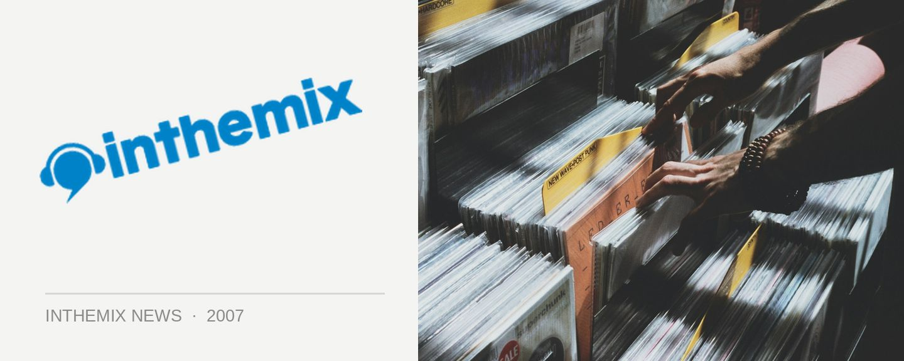

Fight leukaemia with Deepchild & Dust Tones
Be at the Martin Place Amphitheatre next Thursday 15th March from midday for a free sausage sizzle featuring some of Sydney’s finest dance artists. As part of the World’s Greatest Shave to help fight leukaemia, attendees will enjoy performances from Deepchild, Sydney four-piece Percussion Junction and Dust Tones resident DJ Bentley.
Thousands of Sydney residents will shave or colour their hair next week to help the Leukaemia Foundation raise much needed funds for the 30,000 Australians living with leukaemias, lymphomas, myeloma and related blood disorders. 100,000 Australians will be shaving their heads or colouring their hair in the hopes of raising $10 million nationally, with funds assisting the Foundation in providing much needed support to the 25 Australians diagnosed every day.
Make sure you’re at the Martin Place Amphitheatre next Thursday 15th March from midday, and to register with the initiative go to www.worldsgreatestshave.com or call 1800 500 088.